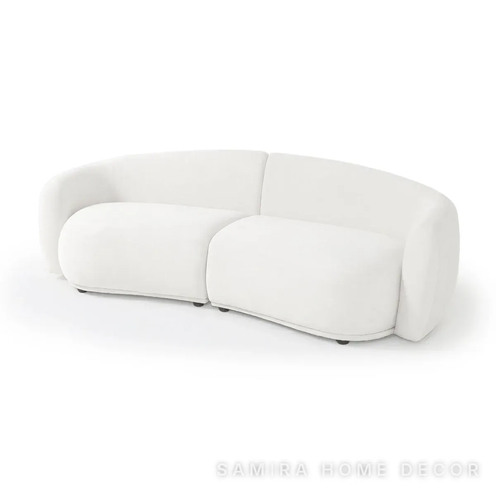

Plan around how you use the room
Start with the room’s main activity. If you entertain, angle seating so guests can talk comfortably. If you unwind with a book, keep a side table within reach and leave a clear path past the seating. Mark the footprint of a sofa and coffee table with painter’s tape before ordering. Check doorways, stairs and lift access against the packaged measurements.
Choose one anchor piece
A sofa sets the scale and mood. The Talor curved velvet sofa is one way to introduce a soft profile in a contemporary room. Pair curved seating with a simple table and repeat one finish or colour elsewhere so the room feels connected. Browse the living room collection to compare sofa shapes and sizes.
Layer materials in a tight palette
Pick a base colour, a supporting tone and one accent. Start with the colours already present in your floors, walls and larger furniture. Pair a textured cushion with a smoother surface like timber, glass or glazed ceramic. Begin with pieces you already own, then fill the gaps with decorative vases and sculptural home décor.
Edit your surfaces
Group pieces with different heights and leave clear space around them. On a console, try a tall vase, a low tray and one personal object. Keep coffee tables usable by placing smaller items in a tray that can be moved together.
Get help pulling the room together
Bring a few photos, room measurements and the pieces you want to keep to an Adelaide interior design consultation. If you’re preparing to sell, explore Adelaide property styling and staging. For a smaller refresh, see our bathroom accessories buying guide.